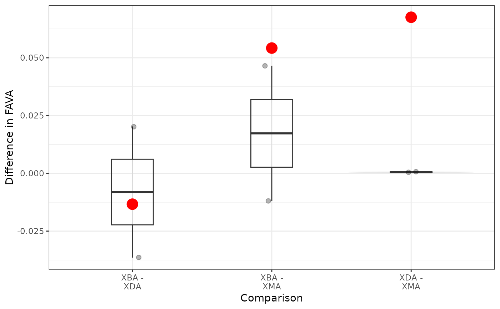

Statistically compare FAVA values between pairs of relative abundance matrices.
Source:R/boostrap_comparison.R
bootstrap_fava.Rdbootstrap_fava uses bootstrapping to statistically compare FAVA values between pairs of relative abundance matrices. bootstrap_fava takes the same options as fava, so, as with fava, you can separately analyze multiple populations or groups of samples (specify group), and account for similarity among categories (specify S) or uneven weighting of rows (specify w or time). bootstrap_fava follows the bootstrapping procedure defined by Efron and Tibshirani (1993). Details on the bootstrapping procedure are available in the Methods section of the accompanying paper.
Usage
bootstrap_fava(
relab_matrix,
n_replicates = 1000,
group,
K = NULL,
S = NULL,
w = NULL,
time = NULL,
normalized = FALSE,
seed = NULL,
alternative = "two.sided"
)Arguments
- relab_matrix
A matrix or data frame with rows containing non-negative entries that sum to 1. Each row represents a sample, each column represents a category, and each entry represents the abundance of that category in the sample. If
relab_matrixcontains any metadata, it must be on the left-hand side of the matrix, the rightKentries of each row must sum to 1, andKmust be specified. Otherwise, all entries of each row must sum to 1.- n_replicates
The number of bootstrap replicate matrices to generate. Default is
n_replicates = 1000.- group
A string (or vector of strings) specifying the name(s) of the column(s) that describes which group(s) each row (sample) belongs to. Use if
relab_matrixis a single matrix containing multiple groups of samples you wish to compare.- K
Optional; an integer specifying the number of categories in the data. Default is
K=ncol(relab_matrix).- S
Optional; a K x K similarity matrix with diagonal elements equal to 1 and off-diagonal elements between 0 and 1. Entry
S[i,k]fori!=kis the similarity between category andiand categoryk, equaling 1 if the categories are to be treated as identical and equaling 0 if they are to be treated as totally dissimilar. The default value isS = diag(ncol(relab_matrix)).- w
Optional; a vector of length
Iwith non-negative entries that sum to 1. Entryw[i]represents the weight placed on rowiin the computation of the mean abundance of each category across rows. The default value isw = rep(1/nrow(relab_matrix), nrow(relab_matrix)).- time
Optional; a string specifying the name of the column that describes the sampling time for each row. Include if you wish to weight FAVA by the distance between samples.
- normalized
Optional; should normalized FAVA be used? Default is
normalized = FALSE; usenormalized = TRUEto compute normalized FAVA. FAVA can only be normalized if it is not weighted.- seed
Optional; an integer to be used as a random seed for the simulations.
- alternative
Optional; do you want to do a one- or two.sided test? Default is
alternative = "two.sided". If you wish to do a one-sided test, specify eitheralternative = "lesser"oralternative = "greater".
Value
A named list containing the following entries:
p_values: The probability of observing the observed difference in variability between each pair of groups if there were no difference between groups. Computed as the fraction of bootstrap differences greater than or equal to the observed difference. Depends on whatalternativeis specified ("greater", "lesser", or "two.sided").bootstrap_distribution_plot: The distribution of bootstrap replicate differences in each variability value. The observed differences are shown in red. The further the red points are from 0, the more significant the statistical difference between groups.observed_stats: The observed diversity statistics for the groups.bootstrap_stats: The bootstrap replicate diversity statistics for the groups.
Examples
# Statistically compare values of FAVA between
# subjects in the xue_microbiome_sample data:
boot_out = bootstrap_fava(relab_matrix = xue_microbiome_sample,
n_replicates = 20, # should use 1000 for a real analysis
seed = 1,
group = "subject",
K = 524,
S = xue_species_similarity)
# Table of P-values comparing values of FAVA between group 1 and group 2:
boot_out$P_values
#> Comparison P_value P_value_numeric
#> 1 XBA - XDA 0.6 0.60
#> 2 XBA - XMA 0.05 0.05
#> 3 XDA - XMA <0.05 0.00
# Plots of the bootstrap distributions of differences in FAVA between each pair of matrices,
# and how the true observed differences (red dots) compare to the distribution.
boot_out$bootstrap_distribution_plot
